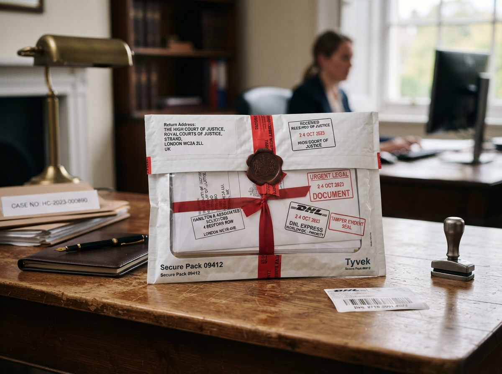
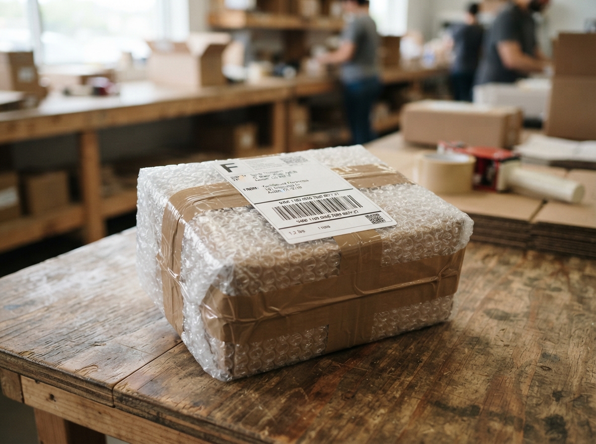
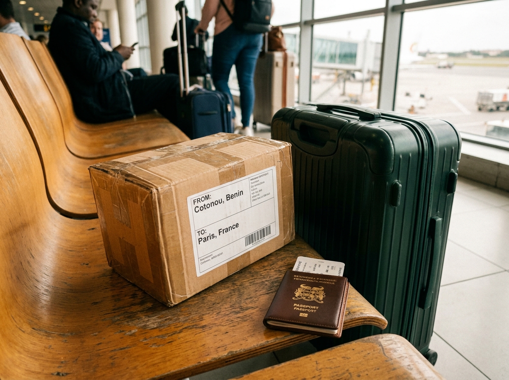
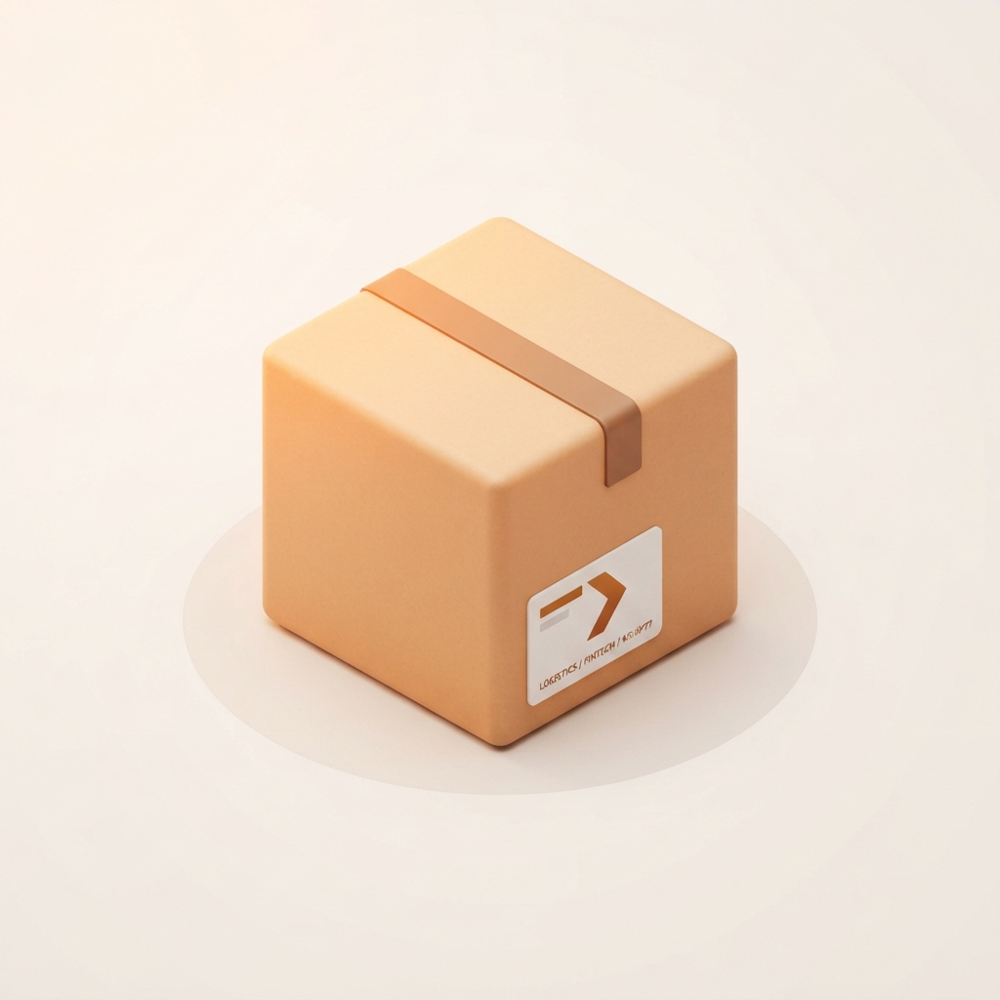

Images extraites des 8 fichiers stitch_zecolis_mobile_splash_screen*.zip
sitting dans zecolis pages\. Chaque archive ne contenait que
screen.png et DESIGN.md : ce sont des rendus d'écrans,
pas les photos utilisées dans le code. Elles ne peuvent donc pas remplacer les avatars manquants.
Pourquoi les noms sont numérotés. Les 8 archives portent toutes le même nom
(« splash screen ») et leur DESIGN.md est rigoureusement identique dans les 8
(empreinte SHA-256 identique). Aucun nom d'écran n'est donc inscrit dans les fichiers.
Les noms ci-dessous reprennent l'ordre des archives. Les couleurs mesurées servent de repère :
2 maquettes claires (01 et 08) et 6 à dominante sombre (02 à 07).
Ouvrez cette page, identifiez chaque écran, et indiquez-moi le nom correspondant pour que je renomme les fichiers.
…splash_screen (1).zip
…splash_screen (2).zip…splash_screen (3).zip
…splash_screen (4).zip…splash_screen (5).zip
…splash_screen (6).zip…splash_screen (7).zip
…splash_screen.zip (sans numéro)| # | Archive d'origine | Fichier extrait | Dimensions | Poids | Orange Zecolis |
|---|---|---|---|---|---|
| 01 | (1).zip | stitch-maquette-01_1024x1024.png | 1024 × 1024 | 764 Ko | 0 % |
| 02 | (2).zip | stitch-maquette-02_1200x896.png | 1200 × 896 | 1,4 Mo | 0 % |
| 03 | (3).zip | stitch-maquette-03_1024x1024.png | 1024 × 1024 | 1,4 Mo | 0 % |
| 04 | (4).zip | stitch-maquette-04_1200x896.png | 1200 × 896 | 1,5 Mo | 0 % |
| 05 | (5).zip | stitch-maquette-05_1024x1024.png | 1024 × 1024 | 1,4 Mo | 0 % |
| 06 | (6).zip | stitch-maquette-06_1200x896.png | 1200 × 896 | 1,6 Mo | 2 % |
| 07 | (7).zip | stitch-maquette-07_1264x848.png | 1264 × 848 | 1,4 Mo | 0 % |
| 08 | sans numéro | stitch-maquette-08_1024x1024.png | 1024 × 1024 | 807 Ko | 0 % |
À noter : la quasi-absence d'orange Zecolis (#FF6B00) dans ces rendus indique
qu'ils suivent le système de couleurs Material Polytechnic fourni dans DESIGN.md
(secondary: #ab3500), et non la palette marine/orange des maquettes applicatives documentées elsewhere.
Ce sont deux systèmes visuels distincts — arbitrage à faire.